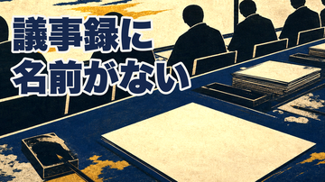

HaQei / アニメと易経 — 第45話 公開キット（予約投稿の前）
この内容で 8月4日 4:00 に予約していいですか
ワンパンマン×豊（ほう） ／ 8分42秒 ／ 公開枠 2026-08-04 04:00 JST（claim済・ep44=7/28、ep43=7/31 の次）
タイトル（独立採点 99点）
いなかったことになっている人が、たぶん一番働いている。｜ワンパンマン×豊
4案をブラインド比較して採用。痛み先頭型・「第N話」なし。H49/H50の旧アームは転換コホートのため適用せず、除外を title-arms.json の contamination_log に記録済み。
サムネイル（独立採点 96点）


1周目（84点）で「直近5本と同じ型の繰り返し・白紙の一枚が主役になっていない」と落ちたので、白紙へ寄って拡大し、題字を上部・墨スクリムなしに変えた2周目が採用されました。作品名タグと卦バッジは載せていません（タイトルに既出のため）。
冒頭9秒（独立採点 99点）
一番働いている人ほど、いなかったことになります。会議で決まったことの半分を実際に動かして、抜けを拾って、なんとか間に合わせた人。その人の名前が、議事録に一度も出てきません。
出荷済みの冒頭がそのまま選ばれました（4案をブラインド比較）。サムネの「議事録に／名前がない」と同じ一つの約束になっています。
概要欄
いなかったことになっている人が、たぶん一番働いています。 会議で決まったことの半分を実際に動かして、抜けを拾って、なんとか間に合わせた人。その人の名前が、議事録に一度も出てこない。あの空白は、その人の力が足りないから空いているのでしょうか。 「ワンパンマン」のサイタマが、一撃で終わらせるたびに見えなくなっていく理由を、易経の「豊（ほう）」で読み解きます。 ■〈名作×易経・全64話〉のコレクションの一話 ▼ チャプター 0:00 一番働いている人ほど、いなかったことになる 0:31 ワンパンマン、強さが誰にも見えていない男 0:43 腕立て百回・上体起こし百回・スクワット百回・十キロを、三年 1:11 強ければ認められると信じて、結果はC級三百八十八位 1:32 キング──地上最強と呼ばれる男の、本当の戦闘力 1:46 五回、居合わせただけの人が最高位になった 2:02 隕石を砕いても、感謝は残らなかった 2:17 深海王、汚れ役を自分から買って出る 2:32 易経の五十五番目「豊」──絶頂を扱う、ただ一つの卦 2:48 卦辞「憂えるな。真昼の太陽のようであれ」 3:08 明るさと動き、二つそろって初めて豊かさになる 3:27 六爻図──下の三本が火、上の三本が雷 3:43 覆いが厚いので、真昼なのに北斗七星が見える 3:58 三爻「右腕を折る。咎はない」 4:13 この本が言う覆いの正体は、党派の争い（解釈の分離） 4:31 折られているのは、行動する腕ではなく、評価へ届く腕 4:53 上爻──門から覗いても、もう誰も見えない 5:08 名前を書かなかったのは、その場にいた全員──自分への刃 5:43 処方箋：豊の六爻＝アピールではなく「届け先を絞る」作法 6:03 初爻 見てくれる人を一人だけ決める 6:22 二爻 論破をやめて、事実だけを淡々と残す 6:42 三爻 動かせなかった一行を、その日のうちに書く 7:00 四爻 待つのをやめて、自分から一度だけ声をかける 7:15 五爻 自分より上手い人の助言を、一つそのまま採る 7:32 上爻＝警告 どうせ分かってもらえない、で門を閉じない 7:50 象辞「明るさで事実を調べ、動きで決着をつける」 8:20 閉じた門は、外から見れば同じ形をしている ▼ このチャンネルについて アニメ・漫画は、現代の寓話。 誰もが結末を知っている物語を、易経──3000年にわたって人間の変化を記録してきた古典──の64のパターンで読み解き、人生の教訓を持ち帰るシリーズです。全64話。 ▼ 今回のパターン 豊（ほう）／雷火豊（らいかほう）：64卦の55番目。上に雷（震）、下に火（離）。明るさの上で雷が鳴っている、絶頂そのものを扱う形です。卦辞は「豊かさは通る。王はそれを成し遂げる。憂えるな。真昼の太陽のようであれ」と堂々としていますが、注釈は「豊かさの時はたいてい短く、そのあとに来る翳りを思えば賢い人ほど悲しくなる」と続けます。面白いのは六本の線で、下から二番目・三番目・四番目が、そろって「覆い」の話をする。「覆いがあまりにも厚いので、真昼なのに北斗七星が見える」。そして三番目は「右腕を折る。咎はない（No blame）」──動けないが、それはその人のせいではない、と言い切ります。いちばん上の線は「家は豊かである。彼は家族を締め出す。門から覗いても、もう誰も見えない。三年のあいだ、何も見えない。凶」。豊かさの果てにある孤立を警告して終わります。象辞は「明るさで事実を正確に調べ、動きで決着をつける」。 ※動画内で述べているとおり、注釈が挙げる覆いの正体は「党派の争い」＝外から掛かるものです。「豊かさそのものが光を覆う」という読みは語り手側の解釈で、原典の直訳ではありません。 ▼ 参照した作品 ・『ワンパンマン』（原作 ONE／作画 村田雄介／集英社「となりのヤングジャンプ」） ※批評・教育目的での言及です。作中事実は一次情報（Wikipedia日本語版・pixiv百科事典）で確認しています。 ▼ 制作について（AI利用の開示） ・ナレーション: AivisSpeech（morioki） ・ビジュアル: AI画像生成・DepthFlowによるモーションを使用した上で、人間が企画・脚本・演出・品質判断を行っています。作中キャラクターの意匠は描いていません（画像は一般化した記号のみ） ・本動画は特定の作品・人物・企業を批判する意図はありません。医療・投資・法律に関する助言ではなく、最終的な判断はご自身でお願いします #ワンパンマン #サイタマ #アニメ考察 #易経 #豊 #仕事 #評価されない #人生の教訓 #哲学 #古典
機械ゲートの通過状況
| ゲート | 状態 |
|---|---|
| script:ready（台本） | 通過 |
| visuals:ready（画像・識別監査） | 通過 |
| full-view:ready（通し視聴・黒落ち検査） | 通過 |
| publish:ready（youtube-long） | 通過 |
| 3種の本人承認 | 企画・台本・通し視聴すべて記録済み |
予約の実行内容：
公開ボタンは押しません。予約後にStudioで最終確認していただけます。
yt-publish.mjs で 非公開（private）＋ 2026-08-04 04:00 JST 予約としてアップロードします。カテゴリ=教育、子ども向け=いいえ、AI生成開示=いいえ（様式化イラストのため。概要欄で開示済み）。公開ボタンは押しません。予約後にStudioで最終確認していただけます。
判断してください
A — この内容で予約する。予約後、ショート（豊→旅の序卦型）の制作に進みます。
B — 直す箇所を指定。タイトル／サムネ／概要欄のどこを、どう直すか教えてください。
C — 今は予約しない。素材はこのまま保持します。